スキンケア
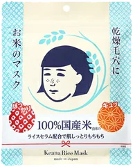
毛穴撫子
お米のマスク 10枚入
10枚
¥715税込・出典掲載価格
クチコミの要約
- 面倒くさい時は、これとクリームだけで終わり。何回リピしたか、もう分からないの。
- 朝の支度の時に使いやすくて、けっこう重宝してるのよ。液がたっぷり入ってるのもうれしい。
気になる声シートが厚めだから、小鼻のあたりが少し浮いちゃうの。開ける時に液がこぼれやすいのも気をつけて。
販売価格・容量・送料はリンク先でご確認ください
THE COSME EDIT / 2026.09.14
YouTubeの10分動画で紹介した21品です。売上ランキング・部門別ベスコス・クチコミの多さから選び、スキンケア・化粧水・ベースメイク・ポイントメイク・ボディとヘアに分けています。
21 ITEMS 動画で紹介した商品
価格は出典掲載時のものです。楽天の現在価格とは異なる場合があります。

毛穴撫子
10枚
¥715税込・出典掲載価格
クチコミの要約
気になる声シートが厚めだから、小鼻のあたりが少し浮いちゃうの。開ける時に液がこぼれやすいのも気をつけて。
販売価格・容量・送料はリンク先でご確認ください
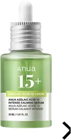
アヌア
30ml
¥2,581税込・出典掲載価格
クチコミの要約
気になる声さっぱりって書いてあったけど、私は塗ったあとペトペトして、そこがちょっと苦手だったな。
販売価格・容量・送料はリンク先でご確認ください
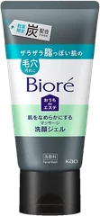
ビオレ
200g
¥878税込・出典掲載価格
クチコミの要約
気になる声ドンキで安かったから買ったの。忙しい時はラクなんだけど、私はやっぱり泡で洗う方が好きかな。
販売価格・容量・送料はリンク先でご確認ください
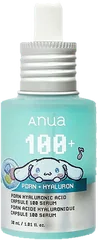
アヌア
30ml
¥2,970税込・出典掲載価格
クチコミの要約
気になる声私には水みたいにさらっとしすぎて、正直まだよく分からないの。とりあえず1本は使ってみる。
販売価格・容量・送料はリンク先でご確認ください
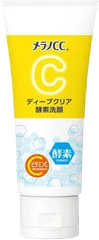
メラノCC
130g
¥787税込・出典掲載価格
クチコミの要約
気になる声夫は何個もリピしてるんだけど、私が使うと、ちょっと乾燥する感じがしたの。夫にはちょうどいいみたい。
販売価格・容量・送料はリンク先でご確認ください
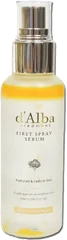
ダルバ
50ml
¥1,430税込・出典掲載価格
クチコミの要約
気になる声ミニと普通サイズを両方ストックしてるくらい好き。ただ夏だけは少し重く感じるかな。
販売価格・容量・送料はリンク先でご確認ください

キュレル
150g
¥1,980税込・出典掲載価格
クチコミの要約
気になる声ミストはすごく細かいんだけど、私にはさっぱりめで、これだけだとちょっと物足りないかな。
販売価格・容量・送料はリンク先でご確認ください
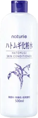
ナチュリエ
500mL
¥748税込・出典掲載価格
クチコミの要約
気になる声私の肌だと、冬はこれだけじゃ物足りなくて乳液を重ねてる。さっぱり感が強めなのよね。
販売価格・容量・送料はリンク先でご確認ください

菊正宗
500mL
¥990税込・出典掲載価格
クチコミの要約
気になる声つけた瞬間は日本酒の香りがふわっとするの。すぐ慣れるけど、好みは分かれそうだなって思う。
販売価格・容量・送料はリンク先でご確認ください
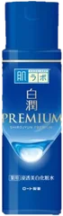
肌ラボ
170mL
¥990税込・出典掲載価格
クチコミの要約
気になる声私はさっぱりめに感じるタイプで、冬場はこれだけだとちょっと物足りないかな。
販売価格・容量・送料はリンク先でご確認ください
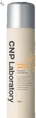
CNP Laboratory
100mL
¥1,650税込・出典掲載価格
クチコミの要約
気になる声プロポリスっぽい独特の香りがあって、私はちょっと気になるけど我慢できる範囲かな。
販売価格・容量・送料はリンク先でご確認ください

innisfree
5g
¥899税込・出典掲載価格
クチコミの要約
気になる声最初に開けた時は粉がふわっと舞ったのよね。2回目からはそっと開けるようにしてる。
販売価格・容量・送料はリンク先でご確認ください

fwee
35mL
¥2,310税込・出典掲載価格
クチコミの要約
気になる声在宅の日に使ってみたら、1日乾燥が気にならなかったよ。カバー力はそこまでない感じ。
販売価格・容量・送料はリンク先でご確認ください

d'Alba
35mL
¥2,200税込・出典掲載価格
クチコミの要約
気になる声塗りたてはちょっとテカっとするのよね。私は乾燥肌だから平気だけど、脂っぽい肌の人は様子見かも。
販売価格・容量・送料はリンク先でご確認ください

コーセー
80ml
¥1,430税込・出典掲載価格
クチコミの要約
気になる声香りが甘めの化粧品っぽいから、苦手な人もいるかも。私はミニサイズをポーチに入れてるよ。
販売価格・容量・送料はリンク先でご確認ください
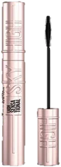
メイベリン
8.6mL
¥1,694税込・出典掲載価格
クチコミの要約
気になる声塗りたては長さが出てきれいなんだけど、夕方に鏡を見たら目の周りが黒くなってたことがあるのよね。
販売価格・容量・送料はリンク先でご確認ください

JUDYDOLL
9g
¥2,090税込・出典掲載価格
クチコミの要約
気になる声塗ってるのかなって思うくらい薄づきで、かなりナチュラルな仕上がりなの。しっかり色を出したい人は物足りないかも。
販売価格・容量・送料はリンク先でご確認ください
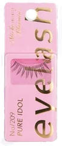
ミッシュブルーミン
1ペア
¥605税込・出典掲載価格
クチコミの要約
気になる声普段つけまはしないんだけど、不器用な私でもちょっとつけやすいかも。まだまだ練習が要りそうだけどね。
販売価格・容量・送料はリンク先でご確認ください
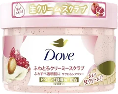
ダヴ
298g
¥1,580税込・出典掲載価格
クチコミの要約
気になる声香りがかなり強くて、私には合わなかったの。小さいサイズにしといてよかったなって思ってるのよね。
販売価格・容量・送料はリンク先でご確認ください
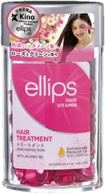
ellips
50粒
¥2,090税込・出典掲載価格
クチコミの要約
気になる声1粒ずつ分かれてて旅行でもかさばらないのはいいんだけど、毎回ハサミで切るのがちょっと手間なのよね。
販売価格・容量・送料はリンク先でご確認ください

ululis
100mL
¥1,540税込・出典掲載価格
クチコミの要約
気になる声石けんっぽい香りがちょっと強めなんだけど、夜に使えば朝には消えてるから私は気にならないの。
販売価格・容量・送料はリンク先でご確認ください
SOURCE & NOTES
集計期間：MAQUIAは2025年8月〜2026年1月の売上、美的.comは2026年上半期の部門別TOP3、@cosmeは2026年9月13日に確認したクチコミです。今の売れ筋順ではありません。
価格は各出典の掲載時点の税込価格です（メラノCC酵素洗顔は2026年4月1日以降の価格、ハトムギ化粧水はオープン価格のためLIPSの価格）。